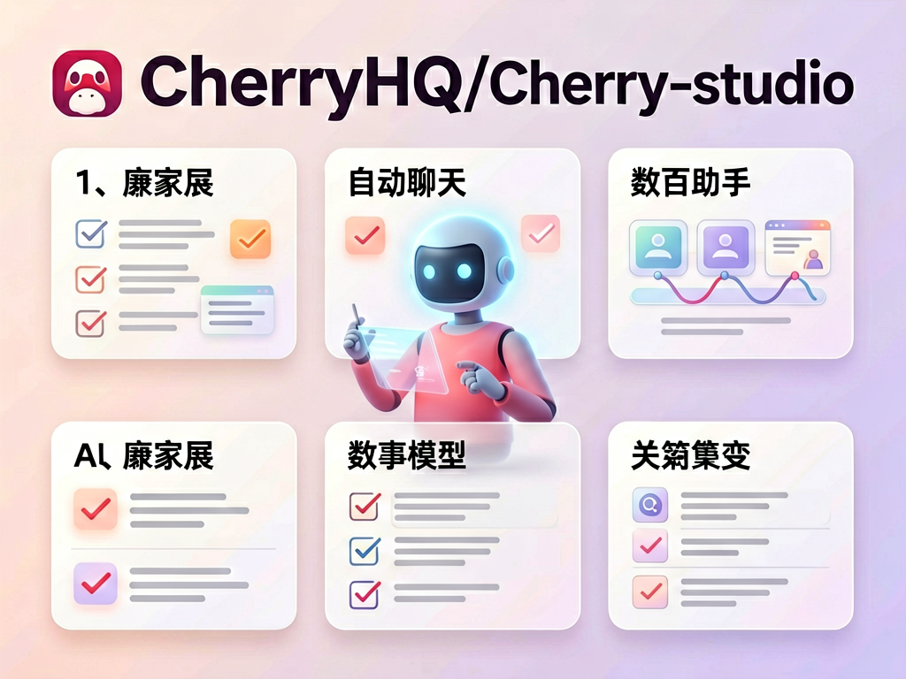
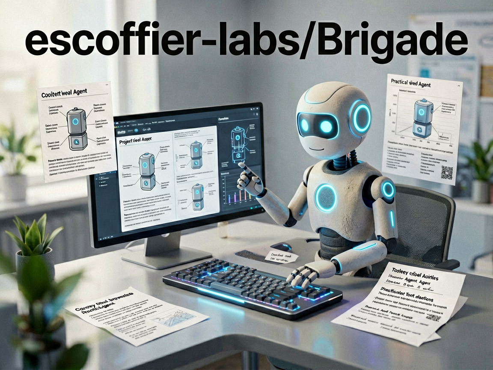

vault-operator
pssah4/vault-operator
Obsidian 里积累了很多笔记后，普通聊天助手仍然不了解库内上下文，整理和调用知识需要反复复制内容。它把 AI Agent 放进 Obsidian 仓库内运行，让 Agent 结合库内记忆、插件、Skills 和外部工具处理任务，并提供 BYOK、MCP 与安全控制。
它适合什么场景
研究者可以让它基于现有笔记梳理某个主题，再把结果接回自己的知识管理流程，而不必先把整批笔记搬到聊天窗口。
值得关注的地方
项目在今天发布了 2.14.10，时间证据明确；候选资料没有说明该版本的具体改动，因此只能确认版本更新，不能推断新增功能。
先别忽略的问题
Agent 能接触知识库和工具，权限边界比普通问答更敏感；使用前需要核对安全控制、模型密钥配置和写入行为。
我的判断：适合已经深度使用 Obsidian、愿意管理模型与工具权限的人试验；只想简单问答的用户暂时不必引入这套复杂度。
查看 GitHub 来源aidevops
marcusquinn/aidevops
AI 可以快速写出应用代码，但部署、权限、仓库维护和持续运行仍需要一套长期运转的工程流程。它通过 CLI 安装和更新一组面向 OpenCode 与 Git 的 Agents，并把这些 Agents 部署到本地目录，形成带工具和约定的 DevOps 自动化栈。
它适合什么场景
开发者全局安装 aidevops 后执行 update，把 Agents 部署到本机，再针对自己的仓库调用相应流程处理维护任务。
值得关注的地方
项目今天发布 v3.21.9，并在同日继续提交代码；这能证明项目正在迭代，但候选证据不足以说明本版本修复了哪些具体问题。
先别忽略的问题
这是一套有明确偏好的工具栈，不是中立组件；接入前应检查它会执行哪些命令、读取哪些仓库信息以及是否符合现有安全规范。
我的判断：适合愿意审查自动化脚本、希望把 AI 编码延伸到仓库运维的开发者；对命令权限缺乏控制的环境不宜直接启用。
查看 GitHub 来源claude-code-plugins-plus-skills
jeremylongshore/claude-code-plugins-plus-skills
Claude Code 的插件和 Skills 数量变多后，用户很难靠手工浏览完成查找、安装、盘点和升级。它用 ccpi CLI 管理插件市场，提供按关键词搜索、安装包、查看已安装项目和统一更新等命令。
它适合什么场景
需要 DevOps 能力时，可以先用 ccpi search devops 找候选，再安装指定自动化包，并通过 list 和 update 维护本地清单。
值得关注的地方
项目在 6 月 19 日发布了 Databricks Pack 1.0.13，属于 7 天内可核验的正式版本变化，而不是单纯 stars 波动。
先别忽略的问题
市场规模大不代表每个包都可靠；安装第三方插件前仍要检查来源、命令权限、维护状态和实际内容，不能只看数量。
我的判断：适合已经在使用 Claude Code 插件体系、需要集中管理扩展的人；首次接触 Skills 的用户应先从少量经过审查的包开始。
查看 GitHub 来源cherry-studio
CherryHQ/cherry-studio
聊天、Agents、不同模型和大量预设助手分散在多个入口时，用户需要频繁切换工具并重复配置。它把智能聊天、自动 Agents、数百个助手和多个前沿模型入口集中到同一个 AI 工作台中。
它适合什么场景
内容团队可以在统一入口选择不同模型或助手处理同一类任务，减少在多个独立客户端之间来回切换。
值得关注的地方
仓库今天有新的代码活动，但没有可核验的新 Release，因此这里只能把它标记为维护活跃，不能宣称今天发布了新能力。
先别忽略的问题
候选证据只证明仓库今天仍有 push，没有提供本次提交的功能说明；多模型整合还会带来密钥、费用和数据流向管理问题。
我的判断：适合确实需要统一管理多个模型和助手的用户继续评估；若只固定使用一个模型，集中工作台带来的额外配置未必划算。
查看 GitHub 来源
brigade
escoffier-labs/brigade
在 Codex、Claude Code 等多个编码 Agent 之间切换时，任务上下文容易丢失，本地执行也缺少统一约束。它以本地 CLI 形式提供 Agent 记忆、任务交接和内容护栏，目标是让多种编码 Agent 共用一套衔接与约束机制。
公开信息依据
核验证据：证据 1
它适合什么场景
开发者可以在一个 Agent 完成阶段性工作后留下交接信息，再让另一个 Agent 接手，同时沿用本地护栏检查。
值得关注的地方
仓库今天出现新的 push，说明仍在开发；由于没有正式版本证据，本次只能确认维护活动，不能把提交内容解释成已经稳定发布。
先别忽略的问题
现有候选只有简短项目说明，没有安装步骤、护栏规则或 Release 细节；真正采用前必须继续验证数据保存位置和拦截范围。
我的判断：适合频繁跨编码 Agent 工作、愿意验证本地状态管理的开发者跟踪；需要成熟审计能力的生产团队应等待更完整证据。
查看 GitHub 来源